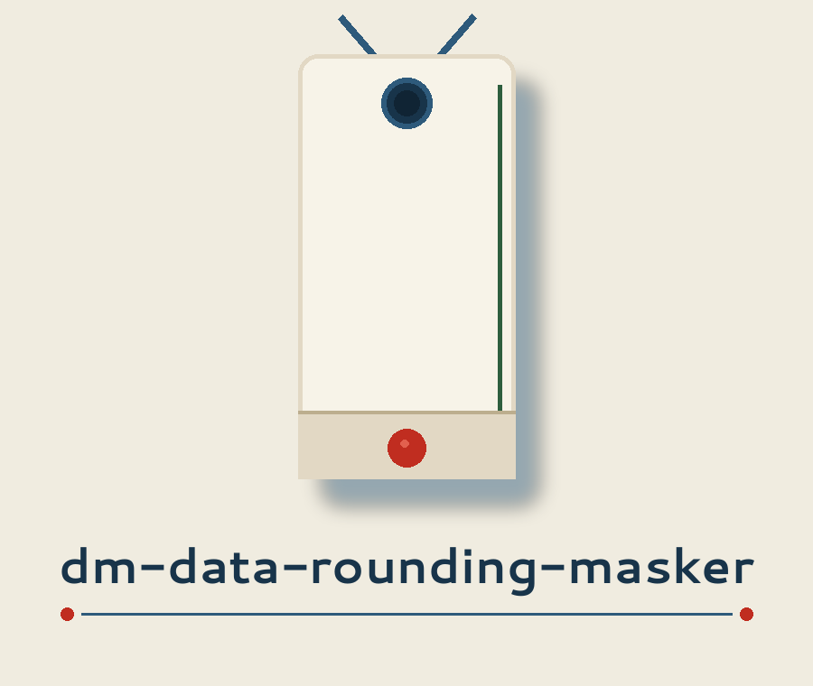
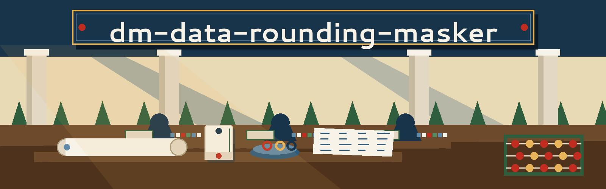
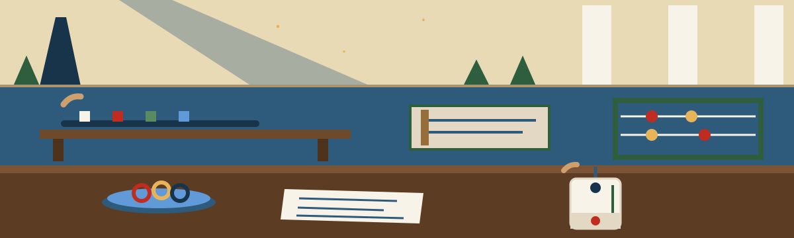

Chronicle entry, the season of the ships' return
dm-data-rounding-masker: The Great Library's Copying Room



First plate: the work
Rounds numerical data to a specified precision. Masks the original data granularity and adds a layer of obfuscation. - Focused on Tools designed to generate or mask sensitive data with realistic-looking but meaningless values
The program rounds numerical data to a specified precision. In so doing it masks the original data granularity, and it thereby adds a layer of obfuscation. No figure from any visitor's column is set beside that statement for illustration.
Second plate: fetching, with one open repair
Whoever would keep a local copy should fetch it with git:
git clone https://github.com/ShadowGuard-AI/dm-data-rounding-masker
Third plate: the invocation shape
./dm-data-rounding-masker [params]
The shape is the whole of what the source chooses to give, so this plate stops at the shape. The source publishes no worked call, no input file name, and no column name that an honest plate could borrow. The space beside the line stays respectfully empty:
Fourth plate: the five controls, in the order printed
- - `-h`: Show help message and exit
- - `-p`: No description provided
- - `-r`: Add a small random value before rounding.
- - `-m`: No description provided
- - `-v`: Enable verbose logging.
Absence, at full size: the control -p carries no description in the source. Nothing here assigns it the precision, a unit, a scale, or a default.
Absence, at full size: the control -m carries no description in the source. Nothing here assigns it a mode or any other conduct.
Absence, at full size: the source never states what unit or scale a precision follows, and never states a default a run assumes when a control is not supplied.
Absence, at full size: the source promises rounding to a specified precision without ever stating how that precision is specified in a call, beyond the bracketed parameters in the invocation shape.
Absence, at full size: the source names no input, no output, and no column anywhere, so the route by which figures arrive and depart is learned from the program itself rather than from its documentation.
Verbose Logging
The -v control enables verbose logging, as the fourth plate records. The logging heading of this re-skin reads Verbose Logging.
Fifth plate: precision and granularity, paired
To round to a specified precision is to declare how much fineness a figure may keep, while everything finer than that declaration is surrendered by design. A reader of the output learns the neighbourhood of a value without ever recovering the value's exact address within it.
The copying room understood that discretion well. Its transcripts preserved the sense and the magnitude of a borrowed book's accounts while the original, with its exact hand, sailed home. A figure rounded here keeps its substance, its magnitude, and its place in every sum that matters, while its accidents, the trailing fineness by which an exact observation could be traced back, are surrendered as deliberately as a copyist surrendered another man's handwriting.
Sixth plate: the two licence facts, kept apart
First stands the repository LICENSE file itself: MIT terms, dated 2025 to 2026. Its holder is described by outline only: a year span, a two word pen name, a bracketed given name holding one initial, and a bracketed handle fronted by an at sign. The line itself is not copied onto this page, and that file alone is the one a downstream reader should cite.
Second, labelled openly as a site correction, stands the README closing line respelled with the current hyphenated organisation in the place where the published line omitted the hyphen:
Copyright (c) ShadowGuard-AI
The preserved line, spelled without the hyphen, stands untouched in the record at the foot of this page and in the README itself.
Seventh plate: the borrowing desk
Present a request slip naming what you came for, and the clerk fetches exactly the one ledger entry that answers it rather than emptying the whole volume onto the desk. Scholars reconstructing old harbour accounts, clerks preparing figures for publication, students whose coursework demands publishable numbers without private ones, and hobbyists tidying a household ledger before sharing it are each served the same courtesy: one entry, fully opened, nothing relevant withheld and nothing extraneous smuggled in.
Ledger entry
Choose a request slip above, and the clerk will open the one entry that answers it.
The preserved record
The copying room keeps its copy of the source below, line for line, with both unhyphenated spellings standing exactly as the live README prints them.
 # dm-data-rounding-masker Rounds numerical data to a specified precision. Masks the original data granularity and adds a layer of obfuscation. - Focused on Tools designed to generate or mask sensitive data with realistic-looking but meaningless values ## Install `git clone https://github.com/ShadowGuardAI/dm-data-rounding-masker` ## Usage `./dm-data-rounding-masker [params]` ## Parameters - `-h`: Show help message and exit - `-p`: No description provided - `-r`: Add a small random value before rounding. - `-m`: No description provided - `-v`: Enable verbose logging. ## License Copyright (c) ShadowGuardAI